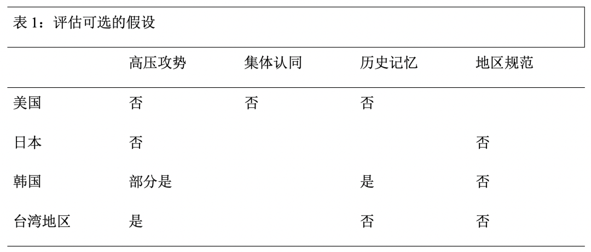
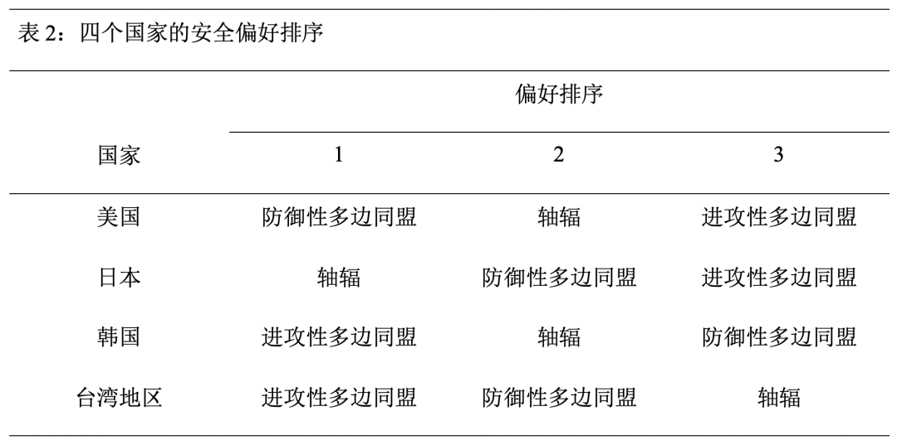
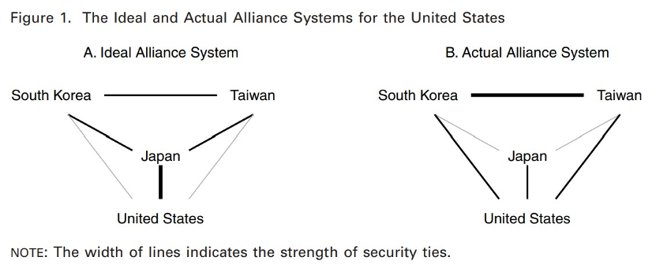

收录于合集 #理论研究 96个

作品简介
【作者】 Yasuhiro Izumikawa (泉川康弘)，日本中央大学综合政策学部教授，研究兴趣为同盟政治、楔子战略与日本外交。
【编译】 王川（国政学人编译员，吉林大学公共外交学院）
【校对】 王泽尘
【审核】 赖永桢
【排版】 陈育涵
【美编 】游钜家
【来源】 Izumikawa, Y. (2020). Network Connections and the Emergence of the Hub-and-Spokes Alliance System in East Asia. International Security , 45 (2), 7-50.
期刊简介
《国际安全》(International Security) 是经过国际和国家安全领域同行审议的顶级学术期刊，其刊发的论文主题涉及广泛，涵盖战争与和平等传统安全问题，以及环境、人口、人道主义、恐怖主义等新的安全议题。期刊创刊于1976年，由哈佛大学贝尔弗科学与国际事务中心 (Belfer Center for Science and International Affairs at Harvard University) 编辑，麻省理工学院出版社 (MIT Press) 出版，每年四期。根据Journal Citation Reports显示，该杂志2019年影响因子为5.432。
网络联系与东亚“轴辐”同盟体系的出现
Network Connections and the Emergence of the Hub-and-Spokes Alliance System in East Asia
Yasuhiro Izumikawa
摘要
为什么在第二次世界大战后东亚出现了“轴辐”同盟体系，而不是多边同盟？现实主义者和建构主义者提出了诸如美国偏好双边同盟、缺乏集体认同以及日本的帝国主义历史记忆等因素。但这些解释都不尽如人意。并且历史记录也表明，实际上直到20世纪60年代初美国都一直在东亚尝试建立多边同盟。本文采用一种基于社会交换理论的模型来解释潜在盟友之间将如何发展出某种特定的体系。在东亚，美国盟友之间的交往无意之间促成了这一地区“轴辐”同盟体系的出现和形成。研究证明，在塑造这一体系时，这些盟友的偏好和行为与美国的行为选择同样重要。这一发现对研究当代东亚的同盟政治可能具有重要意义。
文章导读
01
既有解释及其局限
针对东亚“轴辐”同盟体系，总的来说有两种解释，一种是基于建构主义方法，强调观念和规范的因素。克里斯托弗·海默尔（Christopher Hemmer）和彼特·卡赞斯坦（Peter Katzenstein）认为美国与其亚洲盟友之间缺乏集体认同是无法形成多边同盟的一个重要原因。阿米塔·阿查亚 (Amitav Acharya) 则认为，亚洲地区特有的、优先考虑国家主权不干预的规范，使得亚洲国家不愿意接受制度化的集体安全安排，从而使得亚洲不可能建立北约式的多边同盟。其他的建构主义的解释则强调历史记忆的作用。约翰·杜菲尔德（John Dufaeld）则认为，二战前和二战期间日本暴行的历史记忆，使得亚太其他国家不愿意赞同建立一个包括日本在内的多边同盟。
现实主义则从美国的物质能力与意图方面出发进行解释。最具影响力的现实主义解释假定美国倾向于“轴辐”体系，因为相较于多边同盟，“轴辐”体系能够最大化美国对其盟友的影响力。车维德（Victor Cha）从理论上阐述了这一论点，提出了“高压攻势（powerplay）”理论。
尽管多种建构主义和现实主义观点提供了看似可信的解释，它们仍有严重的局限性。首先，海默尔和卡赞斯坦的观点经不起实证检验，因为美国的档案记录清楚地显示，即使在“轴辐”体系出现之后，美国也在追求建立一个多边同盟。阿查亚的观点也与历史证据相矛盾，因为一些证据表明，一些东亚国家过去和现在都愿意接受对其主权权利的严重限制以换取美国的安全保障。至于历史记忆的解释，虽然可以解释为什么澳大利亚和韩国等一些国家反对将日本纳入多边同盟，但不能解释为什么其他国家在二战前和二战期间尽管经历了日本的帝国主义，但还是支持日本加入同盟体系。同建构主义一样，现实主义的观点也被证明存在实证上的问题。
02
同盟政治的社会交换网络方法
作者提出了解释东亚“轴辐”同盟体系出现的社会交换网络方法（social exchange network approach）。
1.社会交换网络方法的特征
一个网络是一组相互关联的行为体或节点，可以是个人、公司、国家或者任何行为体，它们通过文化、国际贸易或者同盟纽带等关系和纽带联系在一起。社会交换网络方法将行为体之间网络化关系的形成视为社会结构，分析行为体的行为如何受该结构影响，反过来，行为体的行为又是如何塑造该结构。
尽管同盟体系很容易被看作一个网络，但是将社会交换网络方法用于同盟政治的做法最近才开始。多数相关的研究仅关注检验“制衡”等概念，以及“如果国家X与国家Y和Z有同盟纽带，Y和Z彼此更容易成为盟友”此类的观念。其他的国际关系学者还从社会交换网络方法的视角出发来分析轴辐网络中的权力关系。然而，现有的研究仅仅停留于关注此类网络一开始是如何形成的。
社会交换网络方法可以弥补上述不足。社会交换理论假定行为体不能自我满足，并且他们在互相交换其所需的资源的过程中，发展了彼此之间的关系。该理论假定任何交换都会带来机会成本，并且行为体理性地通过交换寻求净收益最大化。这一假定表明行为体必须谨慎选择能够给自己提供最大净收益的搭档。该理论还假定边际效益递减法则适用于任何可交换的资源，表明行为体获取其缺乏的资源的积极性很高，而当这种资源充足的情况下，行为体获取该资源的积极性则会降低。社会交换网络方法指出了两个塑造行为体间网络的因素：一个是行为体间奖赏资源的分配。因为行为体寻求通过交换最大化其收益，这一因素往往会促使资源丰富的行为体之间的交换更加密切，而使其他行为体之间的交换减少。另一个因素是行为体塑造其周围结构的努力。并非所有的行为体都会满足于奖赏资源分配可能形成的网络结构，他们可能会采取行动，利用“萝卜”或“大棒”来塑造对自己有利的网络结构。
**
**
2.假设与研究设计
假定存在四个潜在的盟友——A、B、C和D，他们都面临不同程度的外部威胁。在他们之中，A拥有目前为止最主要的军事和经济资源，使其能够为其他盟友提供安全。B拥有第二多的资源，C和D拥有的资源比B少。这些假设使模型与东亚的情况相似。四个国家都试图通过交换多种安全资源来满足其安全需求。他们进行的安全交换越多，他们之间发展的安全关系就越牢固。
考虑到提供安全的能力在四者之间的分布，B、C和D会优先发展与A的安全纽带，而不是他们彼此之间的安全纽带（“辐”的偏好假设）。这是因为B、C、D从与A的安全纽带中获得的利益要比A从这三者中的任何一者获得的利益多得多。另一方面，A会优先考虑与B建立安全纽带，因为B可以提供三者中最大的安全收益（“轴”的偏好假设）。因此，A和B之间极有可能出现最强的双边安全纽带。一旦A和B之间出现安全纽带，A与C和D的安全纽带的强度就会与A与B的安全纽带的强度成反比，或者借用社会交换理论的术语成“负相关”（“轴-辐”负相关假设），这是因为当A从B处获得充足的安全利益时，他就不太愿意加强与C和D的安全纽带，但当他不能从B处获得充分的安全利益时，他就更愿意这样做。
即使A仍然不愿意加强与C和D的安全纽带，后两者也不会轻易放弃。相反，获得A的安全承诺对C和D非常重要，以至于他们很可能会采取国际关系学者所说的“约束战略”。尽管国家通常使用 “胡萝卜”（奖赏约束）来从其潜在盟友那里获得更强的防御承诺，但C和D可能别无选择，只能使用 “大棒”（强制约束），尽管有可能激怒和进一步疏远A（强制约束的假设）。根据社会交换理论，一个行为体高度依赖于另一个行为体但又缺乏促使后者合作的资源时（正如这个情形中的C和D），就会愿意采用强制的手段来获得后者的合作，原因是强制的成功能够极大地改善现有的状况，而强制的失败仅会使现有的状况略有恶化。
至于B、C和D之间的安全纽带，他们加强彼此间安全关系的意愿与他们与A的安全纽带强度呈负相关；B、C或D从A处获得的安全承诺越多，他们中的每一方就越不愿意加强与其他两者的安全关系，反之亦然（辐间负相关假设）。一个简单的成本- 收益计算可以解释这个逻辑。当三者中的每一方都从A处获得充足的安全承诺时，他们中的每一方从其他两者获得的额外安全的价值是微不足道的，而为其他两者提供安全的成本对于三者中的每一方来说往往是巨大的，因为他们提供安全的能力是有限的。当B、C或D无法从A处获得充足的安全承诺时，相反，他与其他两者加强安全关系的动机会增加。
需要注意的是，这个理论模型并不预测A会反对B、C、D三者之间安全纽带的加强，A对其他三者之间安全纽带的态度是由这种纽带为A带来安全收益的可能性决定的，也就是说，如果B、C、D三者之间的关系为A创造了正的安全外部性，A就会支持加强这种关系，而如果这种关系降低了自己的整体安全收益，A就会反对这种关系。
下文，作者分析了东亚“轴辐”同盟体系在20世纪50年代和20世纪60年代初出现并稳定的过程，以说明案例研究的结果如何证实上述假设。
**
**
3.分析总结


表1表明了来自案例研究的证据是否以及在多大程度上证实了对东亚“轴辐”同盟体系的现有解释。首先，美国对多边安全同盟的偏好和追求，与强调美国有意建立“轴辐”同盟体系的高压攻势和集体认同假设强烈矛盾。正如NSC 5429/5和其他文件所揭示的那样，艾森豪威尔政府认为，防御性的多边同盟最符合美国的利益，因为它可以减轻美国的安全负担，同时维护东亚的稳定（表2）。高压攻势假设也无法解释日本的行为，尽管它预测日本作为一个较弱的盟友，应该追求一个比双边同盟更能有效制约美国的多边同盟，但事实证明，日本的偏好完全相反。历史记忆假设虽然可以解释韩国拒绝将日本纳入多边同盟的原因，但不能解释为什么台湾地区和美国愿意与日本建立并试图加强安全纽带。地区规范假设不能解释美国的三个盟友中的任何一个案例，这些盟友愿意接受对其主权的严重限制以换取美国的正式同盟。
与现有的解释不同，从社会交换网络方法得出的假设与案例研究的证据相吻合。正如轴的偏好假设所预期的那样，美国最初优先考虑并寻求与日本结盟，而不愿与韩国和台湾地区结盟，因为日本拥有更高的地缘战略价值和潜在能力。美国这样做不仅仅是为了与日本结成同盟，也是为了促使日本为东亚地区的安全做出贡献。在美国看来，理想的安全架构是日本与美国紧密结盟，并在地区安全方面发挥核心作用，而美国则为韩国和台湾地区提供补充支持(图1A)。然而，事实证明，日本对地区安全的贡献远不如美国所希望的那样。日本对地区安全的贡献不足，促使美国重新评估韩国和台湾地区的地缘政治意义，加强了与它们的双边关系。美国的这一政策变化符合轴辐负相关假设。

美国之外的案例支持了“辐”的偏好假设，即美国的盟友优先考虑的是与美国的安全纽带，而不是盟友彼此之间的安全纽带。日本比美国更持久地寻求和坚持与美国的双边同盟关系，韩国和台湾地区显然认为与美国的安全纽带对其生存至关重要。事实上，获得与美国的正式同盟非常重要，以至于当美国在朝鲜战争结束时仍然不愿意正式与韩国结盟时，韩国采取了强制约束行动。韩国的行为符合强制约束假设，它为美韩同盟的形成提供了更完整的解释，而高压攻势假设则只强调了美国为阻止韩国的单边行动所做的努力。台湾地区的案例虽然没有明确支持强制约束力假设，但为该假设提供了直接的证据。第一次台海危机促使美国与台湾地区正式结盟，台湾地区不需要使用强制约束手段。然而，台湾地区愿意接受风险的态度，例如其对美国一再提出的从近海岛屿撤军或减军的要求置之不理，可以被解释为防止美国进一步削弱同盟承诺的一种方式。
美国盟友的案例也支持“辐”间负相关假设，即美国盟友之间追求安全纽带的程度与其各自与美国的安全纽带强度呈负相关。日本大体上成功地获得了美国强有力的安全承诺，其安全感也因美国与韩国和台湾地区结成双边同盟而得到提升，这使日本与韩国和台湾地区发展安全纽带的动机降到最低。台湾地区仍然对美国的安全承诺水平最不满意，为了解决其不安全问题，台湾地区成为美国三个盟友中创建多边同盟最积极的倡导者，尽管受到日本过去帝国主义的伤害，台湾地区仍努力将日本纳入这一体系。虽然台湾地区最理想的选择是进攻性的多边同盟，但即使是防御性的同盟也能通过稳定美国的安全承诺来满足自身利益（表2）。韩国寻求建立不包含日本的多边同盟也符合这一假设。考虑到与美国的同盟确保了韩国的生存，韩国寻求的是进攻性而非防御性的多边同盟（表2），而日本是这一同盟的障碍。同时，韩国还担心加强与日本的安全纽带可能导致美国脱离韩国。
总而言之，为什么尽管美国拥有压倒性的实力，却未能建立起它所希望的多边同盟(图 1A)，而“轴辐”同盟体系(图 1B)却持续存在？美国希望建立防御性多边同盟的一个障碍是日本不愿意提供地区安全。虽然美国成功地与日本建立了同盟，但其对盟友强有力的安全承诺，再加上与其他两个 “辐"的结盟，反而削弱了日本与韩国和台湾地区发展安全纽带的动机。韩国拒绝将日本纳入多边体系，使得美国所期望的多边同盟体系的建立更加困难。台湾地区是建立多边同盟的最积极的倡导者，但考虑到日本和韩国的上述政策，台湾地区建立多边同盟的努力是无足轻重的。在这种情况下，美国不得不充分利用现有的同盟，提升韩国和台湾地区的作用，进一步稳定“轴辐”体系。综上所述，“轴辐”体系是美国与其三个盟友之间互动产生的意外产物。
03
结论
在本文中，作者探讨了东亚“轴辐”同盟体系一直存续的原因。在此过程中，作者指出了现有解释的不足，并提出采用社会交换网络方法来解释。实证分析表明，这种方法可以有效地解释美国及其盟友的偏好和行为，以及他们之间的互动是如何产生“轴辐”体系的。
如果说这项研究对了解东亚“轴辐”同盟体系的起源有指导意义，那么它对东亚未来的同盟体系有什么启示？中国的崛起和美国的相对衰落对“轴辐”体系有何影响？一方面，这些趋势对现有体系的影响是美国原本希望的日本在东亚安全事务上承担更多的责任。另一方面，中国的崛起不仅极大地增加了自身影响，而且也增加了为他者提供利益的能力，这种能力已经并将持续给美国与其他“辐”的关系带来复杂性。
在这种情况下，美国如果想以有利于其利益的方式维护或促进“轴辐”体系的演变，就必须采取两个步骤。首先，它需要保留其为盟友提供安全的能力，以确保盟友愿意继续与美国进行安全交换。其次，美国应鼓励其盟友加强彼此之间的安全纽带，最好是用 “萝卜”，但必要时也要用 “大棒”。
译者评述
相比于欧洲，为什么二战后东亚地区会形成双边的“轴辐”同盟体系？很多既有研究强调这种双边体系是美国想要的，例如，车维德的“高压攻势”理论认为，美国在冷战时期的意图是建立双边同盟，而非多边体系，以便更好管理韩国和台湾地区的“进攻性”行为。但相关史料却表明直至20世纪60年代初，美国仍试图在东亚建立起一套多边同盟体系。基于社会交换理论，作者提出了一个不同于传统解释路径的社会交换网络模式，强调美国盟友的偏好与美国的意愿是同样重要的。美国与其盟友的安全联系强度影响了盟友之间发展安全关系的动力。美国与其盟友的安全联系越强，满足的安全需求越多，盟友之间建立多边联系的动力就越弱。本文基于对相关史料的重新挖掘，并利用社会网络分析的相关研究成果，对东亚双边同盟的起源这一传统问题进行了最新研究。相比于之前的研究，本文从社会交换网络的角度为了我们理解东亚“轴辐”同盟体系的起源提供了更为全面的视角——不仅仅关注美国的意愿，也强调美国东亚盟友的偏好。尽管由于不对称的同盟结构，美国自身的意愿对同盟建立与同盟设计的影响更大，但美国东亚盟友的结盟偏好与讨价还价能力也是不容忽视的。
文章观点不代表本平台观点，本平台评译分享的文章均出于专业学习之用, 不以任何盈利为目的，内容主要呈现对原文的介绍，原文内容请通过各高校购买的数据库自行下载。
**
**
添加 “国小政”微信
获取最新资讯


国政学人
支持学术公益与知识传播
微信扫一扫赞赏作者 __赞赏
已喜欢，对作者说句悄悄话
取消 __
发送给作者
发送
最多40字，当前共字
上一页 1/3 下一页
长按二维码向我转账
支持学术公益与知识传播
受苹果公司新规定影响，微信 iOS 版的赞赏功能被关闭，可通过二维码转账支持公众号。